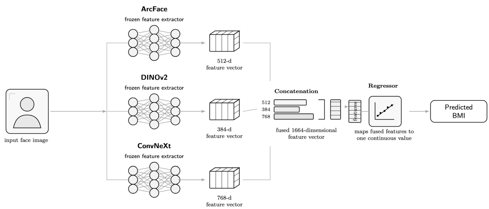
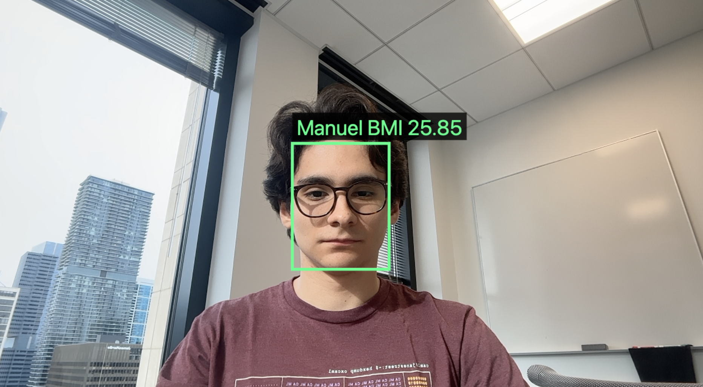

Beating Face-to-BMI with Pair-Safe Modern Embeddings
A prose-first account of how we replicated the Face-to-BMI paper, made the evaluation leakage-safe, and improved the reported score with modern frozen embeddings.
Original Paper
The original Face-to-BMI paper asked whether a computer vision model could infer a person's body mass index from a face image.
Kocabey et al. framed the problem as supervised regression. They collected face images with BMI labels, extracted visual features with pretrained convolutional networks, and trained a support vector regressor to predict BMI. The paper compared generic VGG-Net features with VGG-Face features, where VGG-Face was the stronger representation because it was pretrained specifically for faces.
The connection to our project is the evaluation. The paper reported Pearson correlation between true BMI and predicted BMI on a held-out test set. Their best reported overall result was r = 0.65 with VGG-Face features and SVR. So the natural replication target is not just to build a BMI predictor, but to build one that exceeds that held-out correlation under a fair split.
Assignment
The assignment was to replicate and extend the paper, then ship a simple real-time web API or demo. In plain English, “beat the paper” means that on examples the model did not train on, our predictions should linearly track true BMI better than the original paper's best model. Numerically, that means an overall Pearson correlation greater than 0.65.
That definition matters because a model can look good for the wrong reason. The dataset appears to contain before/after pairs of the same person. If one image from a pair is in training and the other is in test, the model may learn identity-related features and appear more accurate than it really is. Therefore we treated beating the paper as a leakage-safe target: train, validation, and test should not share paired images from the same person.
Data We Have
The dataset came from the course-provided Copy of BMI.zip. Inside the zip, the canonical metadata file was BMI/Data/data.csv. It contained columns for a row id, BMI, gender, an official training flag, and an image filename. A sample of the metadata looked like this:
| unnamed:_0 | bmi | gender | is_training | name | |
|---|---|---|---|---|---|
| 0 | 0 | 34.207396 | Male | 1 | img_0.bmp |
| 1 | 1 | 26.453720 | Male | 1 | img_1.bmp |
| 2 | 2 | 34.967561 | Female | 1 | img_2.bmp |
| 3 | 3 | 22.044766 | Female | 1 | img_3.bmp |
| 4 | 6 | 25.845588 | Female | 1 | img_6.bmp |
We used exact image mapping rather than fuzzy filename search. This is important because fuzzy image matching can silently attach the wrong image to the wrong label. After exact path verification, the final available-image subset contained 3,955 clean rows.
The main data decision was the pair-safe grouping rule. Adjacent rows appear to correspond to before/after images of the same person, so we grouped rows by integer division of the metadata row id:
df["row_id"] = df["unnamed:_0"].astype(int)
df["pair_id"] = df["row_id"] // 2The final protocol used the provided is_training column for the official test split, then carved validation only out of the official training pool while keeping pair_id groups together. The final group-overlap audit was zero for train/validation, train/test, and validation/test.
Model Intuition
The strongest clue from the original paper is that face-specialized features beat generic image features. VGG-Face worked better than VGG-Net because it was trained to represent faces. The modern version of that idea is ArcFace, a face-recognition embedding trained to separate identities in a highly discriminative feature space.
However, BMI from a face image is not purely an identity-recognition problem. Generic visual cues can still matter: pose, face shape, texture, lighting, and other visual patterns. For that reason we combined ArcFace with two modern general-purpose image representations: DINOv2 and ConvNeXt.
The intuition is that the three representations are complementary. ArcFace contributes face-geometry and identity-sensitive structure. DINOv2 contributes self-supervised semantic and shape information. ConvNeXt contributes strong supervised image features. Because the dataset has only a few thousand images, we avoided full end-to-end fine-tuning and instead used frozen embeddings with regularized regressors.

Training
The training code is intentionally closer to a classical machine-learning pipeline than a fine-tuning script. The heavy networks are used as frozen feature extractors, and the only learned component is a lightweight regressor on top of their embeddings. This made the experiment faster, easier to audit, and less likely to overfit a dataset with only a few thousand labeled images.
The first important code block is the split. The metadata gives an official is_training flag, but we still needed to protect against before/after pair leakage. We treated adjacent metadata rows as the same person-level group and made sure no group crossed train, validation, and test.
def make_pair_safe_split(df):
df = df.copy()
# The metadata row id is the stable row identifier from data.csv.
df["row_id"] = df["unnamed:_0"].astype(int)
# Adjacent rows appear to be before/after images of the same person.
# This group id is the leakage barrier.
df["pair_id"] = df["row_id"] // 2
# Use the paper-comparable official test split.
train_pool = df[df["is_training"] == 1].copy()
test = df[df["is_training"] == 0].copy()
# Split validation only from the official training pool.
splitter = StratifiedGroupKFold(
n_splits=5,
shuffle=True,
random_state=42,
)
strata = train_pool["gender_clean"] + "_" + train_pool["bmi_cat"]
train_idx, val_idx = next(
splitter.split(train_pool, strata, groups=train_pool["pair_id"])
)
train = train_pool.iloc[train_idx].copy()
val = train_pool.iloc[val_idx].copy()
assert set(train.pair_id).isdisjoint(val.pair_id)
assert set(train.pair_id).isdisjoint(test.pair_id)
assert set(val.pair_id).isdisjoint(test.pair_id)
train["split"] = "train"
val["split"] = "val"
test["split"] = "test"
return pd.concat([train, val, test], ignore_index=True)The second key block is feature extraction. For each image, the pipeline obtains three frozen representations. ArcFace is the face-specialized branch; DINOv2 and ConvNeXt are general visual branches. If ArcFace fails to detect a face, the feature vector is filled with missing values and the downstream imputer handles it.
def extract_frozen_features(image):
# ArcFace / InsightFace branch: face-specific representation.
face = insightface_app.get(to_bgr(image))
if face:
best_face = max(face, key=lambda f: f.det_score)
arcface = best_face.embedding.astype("float32") # 512-d
crop = loose_face_crop(image, best_face.bbox)
else:
arcface = np.full(512, np.nan, dtype="float32")
crop = center_crop(image)
# DINOv2 branch: self-supervised generic visual representation.
dinov2 = dinov2_vits14(preprocess(crop)) # 384-d
# ConvNeXt branch: supervised ImageNet-style visual representation.
conv = convnext_tiny.features(preprocess(crop))
convnext = adaptive_avg_pool2d(conv, 1).flatten() # 768-d
return arcface, dinov2, convnextThe frozen vectors are then concatenated into a single feature vector. This is the central modeling idea: do not ask one representation to capture everything. Let a face-recognition embedding, a self-supervised transformer embedding, and a modern CNN embedding each contribute complementary signals.
X_arc = load("arcface_buffalo_l_original.npy") # n x 512
X_dino = load("dinov2_vits14_loose.npy") # n x 384
X_conv = load("convnext_loose.npy") # n x 768
X_fused = np.concatenate([X_arc, X_dino, X_conv], axis=1)
# X_fused shape: n x 1664The simplest strong regressor was RidgeCV. The imputer is important because some face detections fail. The scaler is important because the three embedding families do not naturally live on the same numerical scale. Ridge regularization is important because the fused vector has 1,664 dimensions and the dataset is relatively small.
def ridge_model():
return make_pipeline(
SimpleImputer(strategy="mean"),
StandardScaler(),
RidgeCV(alphas=np.logspace(-4, 4, 41)),
)
model = ridge_model()
model.fit(X_fused[train_mask], y[train_mask])
val_pred = model.predict(X_fused[val_mask])
test_pred = model.predict(X_fused[test_mask])We also trained two variants that are useful for tabular-style regression on frozen embeddings. The first transforms the target distribution before Ridge regression. The second compresses the feature vector with PCA before an RBF-kernel SVR.
def quantile_ridge_model(n_train):
return TransformedTargetRegressor(
regressor=ridge_model(),
transformer=QuantileTransformer(
n_quantiles=min(512, n_train),
output_distribution="normal",
random_state=42,
),
)
def pca_svr_model(n_features):
return make_pipeline(
SimpleImputer(strategy="mean"),
StandardScaler(),
PCA(n_components=min(256, n_features - 1), random_state=42),
SVR(kernel="rbf", C=10.0, epsilon=0.3, gamma="scale"),
)The ensemble was deliberately selected on validation predictions only. This is the part that prevents the test set from becoming a tuning set. We ranked candidate models by validation correlation, removed near-duplicate predictions, then optimized nonnegative weights with a cap so no single component could dominate too aggressively.
def validation_objective(weights, P_val, y_val):
weights = np.maximum(weights, 0)
weights = weights / (weights.sum() + 1e-12)
pred = P_val @ weights
return -pearsonr(y_val, pred)[0]
selected = decorrelated_top_validation_models
P_val = val_predictions[selected]
result = minimize(
validation_objective,
x0=np.ones(len(selected)) / len(selected),
args=(P_val, y_val),
method="SLSQP",
bounds=[(0, 0.50)] * len(selected),
constraints={"type": "eq", "fun": lambda w: np.sum(w) - 1.0},
)
weights = np.maximum(result.x, 0)
weights = weights / weights.sum()
test_pred = test_predictions[selected] @ weightsFinally, every model and ensemble was evaluated with the same metric function. Pearson correlation was the primary paper-comparison metric, but we also tracked Spearman correlation, MAE, RMSE, R², bias, and tolerance bands so the report would not rely on a single number.
def regression_metrics(y_true, y_pred):
return {
"pearson_r": pearsonr(y_true, y_pred)[0],
"spearman_rho": spearmanr(y_true, y_pred).correlation,
"mae": mean_absolute_error(y_true, y_pred),
"rmse": np.sqrt(mean_squared_error(y_true, y_pred)),
"r2": r2_score(y_true, y_pred),
"bias": np.mean(y_pred - y_true),
"within_2": np.mean(np.abs(y_pred - y_true) <= 2.0),
"within_5": np.mean(np.abs(y_pred - y_true) <= 5.0),
}Results
The first exploratory run nearly matched the paper, but we did not treat it as final because the split was not pair-safe. Once we repaired the evaluation, the generic embedding baseline reached r = 0.639, slightly below the paper's 0.65. This was a useful checkpoint: the stricter protocol made the problem harder.
The decisive improvement came from adding ArcFace. ArcFace alone was close to the paper target, and ArcFace fused with DINOv2 and ConvNeXt clearly exceeded it. The best simple single model reached r = 0.7104. The best validation-selected ensemble reached r = 0.7216.
The final result is therefore: on the official available-image, pair-safe split, the ArcFace + DINOv2 + ConvNeXt ensemble beat the original VGG-Face + SVR paper baseline. The improvement also held across gender subgroups, with female r = 0.718 and male r = 0.727.
Demo/API
The final deliverable includes a minimal webcam-only API. A lightweight YuNet face detector tracks face boxes in real time, while the heavier ArcFace + DINOv2 + ConvNeXt BMI model runs only when the user presses the calculate button. This keeps the interface responsive while still using the stronger model for the actual prediction.
The demo supports multiple people on screen at once. YuNet continuously tracks up to six faces in the webcam stream, and the browser maintains stable track IDs so the colored boxes do not swap identities when people move. When the user presses calculate, the backend runs the BMI model on each detected face and sends the predictions back to the live overlay.
We also added an optional local face-recognition layer for the demo. A user can type a name, press capture, and save a clear webcam frame as an ArcFace embedding in models/known_faces.joblib. Later, when the same person appears in the webcam, the API compares the new ArcFace embedding against the saved embeddings with cosine similarity. If the match passes the threshold, the overlay shows the person's name next to their predicted BMI instead of a generic label such as P1.

GET / # webcam demo
POST /detect # lightweight YuNet face boxes for up to six people
POST /predict_multi # BMI predictions for up to six people
POST /enroll # local ArcFace name enrollment for later recognitionLimitations
The largest technical limitation is regression to the mean. The model tends to overpredict lower BMI and underpredict very high BMI, especially obesity class 3. This means the model can have a strong aggregate correlation while still producing poor individual estimates.
The largest ethical limitation is that face-based BMI prediction is sensitive and potentially biased. This project is an academic replication and critique, not a medical or decision-making tool. It should not be used for medical, employment, insurance, or personal decisions.
Tables
Paper baseline
| Paper model | Male r | Female r | Overall r |
|---|---|---|---|
| VGG-Net features + SVR | 0.58 | 0.36 | 0.47 |
| VGG-Face features + SVR | 0.71 | 0.57 | 0.65 |
Final split audit
| Split | Images | Pair groups | BMI mean | BMI std |
|---|---|---|---|---|
| Train | 2,565 | 1,295 | 32.38 | 7.83 |
| Validation | 642 | 324 | 32.44 | 8.16 |
| Test | 748 | 383 | 33.46 | 8.62 |
Main results
| Model | Features | Regressor | Test Pearson r | Spearman | MAE | RMSE |
|---|---|---|---|---|---|---|
| Paper VGG-Net | VGG-Net fc6 | SVR | 0.470 | - | - | - |
| Paper VGG-Face | VGG-Face fc6 | SVR | 0.650 | - | - | - |
| v2 repaired baseline | DINOv2 + ConvNeXt | weighted ensemble | 0.639 | 0.656 | 5.007 | 6.839 |
| Best single v4 | ArcFace + DINOv2 + ConvNeXt | RidgeCV | 0.710 | 0.733 | 4.508 | 6.172 |
| Best final v4 | ArcFace + DINOv2 + ConvNeXt | validation ensemble | 0.722 | 0.746 | 4.434 | 6.199 |
Gender subgroup results
| Subgroup | Paper r | Our r | n | MAE | Bias |
|---|---|---|---|---|---|
| Female | 0.57 | 0.718 | 322 | 4.369 | -0.951 |
| Male | 0.71 | 0.727 | 426 | 4.484 | -2.006 |
| Overall | 0.65 | 0.722 | 748 | 4.434 | -1.552 |